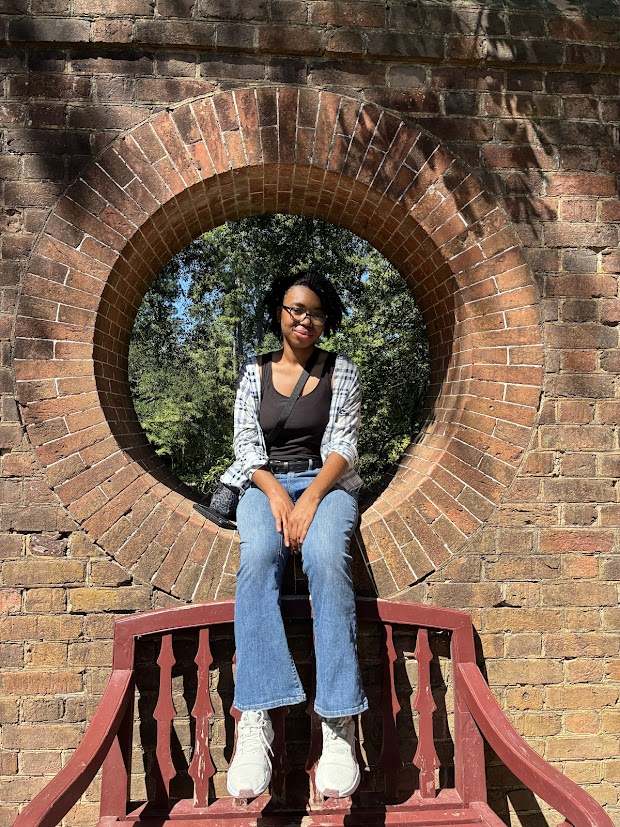
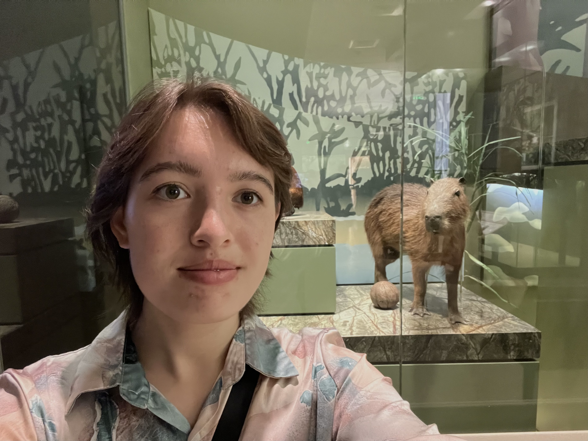
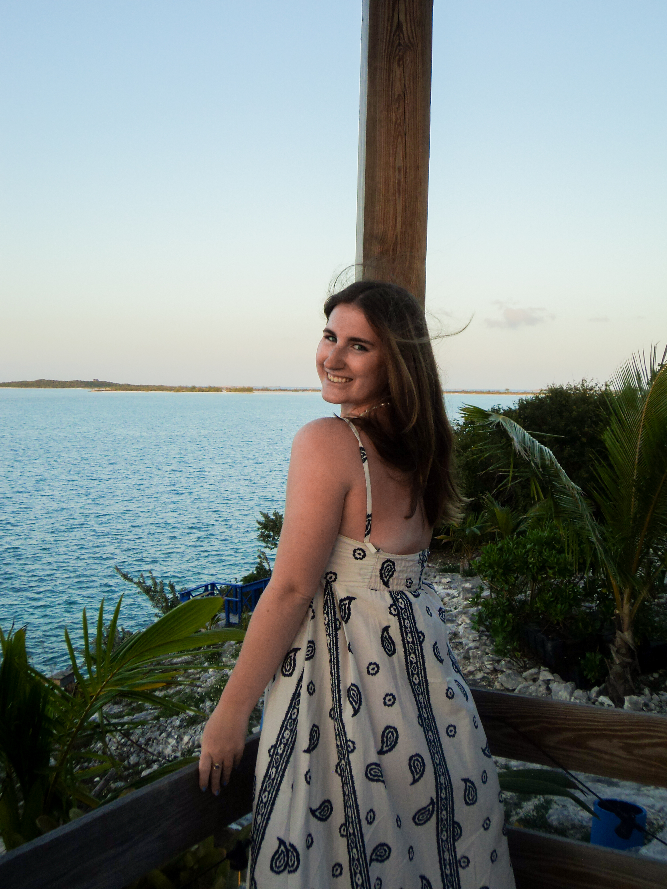
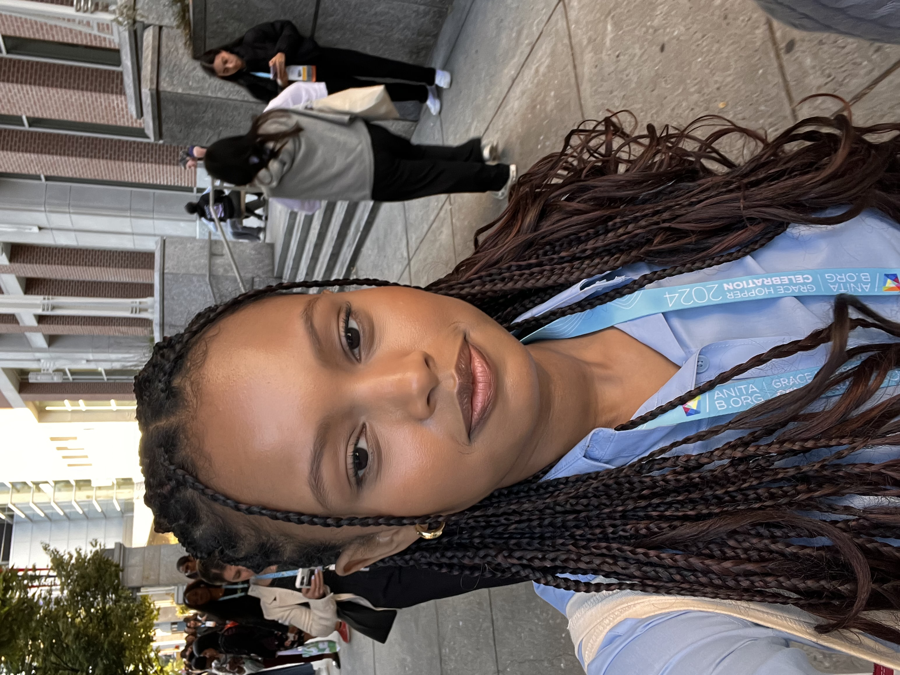

President: Ellie Baranowski (she/her)
Hi! I’m a senior majoring in Computer Science with a minor in Physics. I am also the President of ClubJudo.
I joined SWC my freshman year to meet new people and find a community of CS girlies!
Vice President: Comfort Ohajunwa (she/her)

Hi! I'm a senior majoring in computer science and mathematics. I'm also part of ACM and geoLab!
I joined SWC during my sophomore year because I wanted to connect with other female students who shared my interest in technology.
Since then, not only have I made connections, but I've also gained skills and access to resources that have helped me on my academic/career journey!
Treasurer: Athena Allgeier (she/her)
Hello! I am a Junior studying Computer Science with a minor in Math.
I'm also involved in club fencing and am a member of Pi Phi.
I joined SWC my freshman year to connect with other women in my major.
In my freetime, I enjoy crafting and working out.
Secretary: Rebecca George (any pronoun)

Hi! I'm a senior Computer Science and CAMS Mathematical Biology major.
I've been in SWC since sophomore year, along with Linux club, Robotics club, and ACM.
I like to play outside, work on low-level code, and learn more about high performance computing.
PR Chair: Molly Midkiff (she/her)

Hello! I’m a junior majoring in Computer Science with a focus in Cybersecurity and minoring in Public Health.
I've been apart of SWC since my freshman year and cannot imagine my college experience without it!
I love being able to easily connect with other women in computing here on campus.
I am also apart of Alpha Chi Omega and enjoy CW walks, playing golf, and anything to do with art.
Outreach Chair: Gigi Kuffa (she/her)

Hi! I'm a senior, double majoring in Computer Science on the AI & Machine Learning track as well as English Literature.
I'm also a Chapter Lead of the Google Developer Student Club chapter here!
I joined SWC my freshman year because I wanted to meet more women in my major and participate in Outreach's mentorship program.